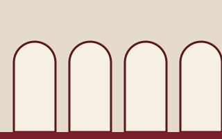
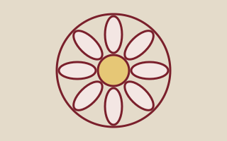

About the Cathedral
A seat of the bishop, a parish church and a public square under one roof.
Who we are
The Cathedral of Saint Aurelian is an invented cathedral in an invented city. Begun in a long-ago century and still unfinished, it serves as the seat of a fictional bishop and as home to a congregation that gathers each week for prayer, music and meals.
Its nave is among the longest in the region, its choir school is among the smallest, and its masons’ yard has not been silent for generations.
Mission
We open the doors every day for worship, hospitality and the free exchange of ideas, and we tend the building so it can be handed on in good repair.
Columbarium
A quiet chapel under the north aisle holds niches for ashes. Enquiries are handled by the pastoral office; this demo does not take reservations.
Space rentals
The Cloister Hall, Bishop’s Garden and Nave may be hired for concerts, lectures and weddings on request. Rates and availability are not part of this demo; contact the (fictional) events office at events@aurelian.example.
About this demo site
This site is a fictional replica built for an accessibility and usability research dataset. It mirrors the layout and navigation of a real cathedral website but shares none of its copy, logos or media. Forms do not send data, and sample events, people and recordings are invented.
Keep reading

Leadership
Trustees, senior staff and clergy.

Plan your visit
Hours, prices and how to get here.